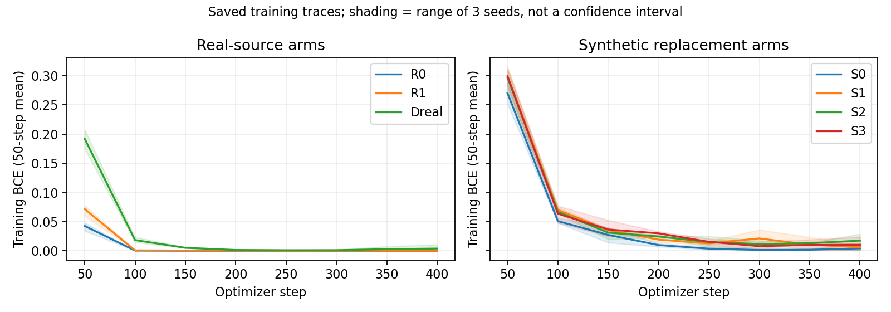

기존 LoRA의 사적 효용 전달 대조 명세 — 2026-09-17
판정: 빠져 있던 대조를 채우는 계획으로 타당하다. LoRA의 효용이나 성공 가능성을 확인한 결과는 아니다. 이번 산출물은 저장 결과의 짧은 점검과 실행 전 설계다. 새 GPU·모델 추론·학습·생성·환자 영상 접근은 0이다. 현재 full64 분기 종료, 그 구성의 DP 중단, expert final·reserved 보존은 그대로 유지한다.
1. 질문과 비교
질문은 하나다. 동일한 공개 E4에서 기존 LoRA를 더 적응시킬 때, 사적 80명을 추가한 생성물이 공개 32명만 추가 적응한 생성물보다 downstream 기흉 분류에 유용한가?
| 적응 방식 | 공개 32명·64장 | 공개 32명·64장 + 사적 80명·320장 |
|---|---|---|
| 기존 full64 | 기존 S1, 그대로 보존 | 기존 S3, 관문 실패 그대로 보존 |
| 기존 rank-8 LoRA 계속 학습 | 새 L_public | 새 L_pooled |
Primary는 $U(L_{pooled})-U(L_{public})$다. 기존 $U(S3)-U(S1)$과의 차이는 보조 기술 비교다. LoRA가 head보다 높다는 것만으로 private 추가 효용이라고 판정하지 않는다. 과거 M1/M2는 학습 환자와 접근량이 달라 이 대조를 대신하지 않는다.
LoRA와 head는 parameterization뿐 아니라 학습 목적, 관측 draw, 최적화 및 null branch 변화도 다르다. 성공해도 효용을 전달하는 다른 적응 구성이 존재한다는 개발 근거이지, head 용량 하나를 원인으로 식별한 결과는 아니다. 실패해도 모든 LoRA나 모든 합성 증강의 불가능성을 뜻하지 않는다.
2. 저장된 classifier 결과의 짧은 점검
기존 21개 trace와 이미 저장된 method-development 예측만 읽었다. 새로운 epoch·예측·평가기·threshold를 만들지 않았다.
| Arm | 처음 50step 평균 BCE | 마지막 50step 평균 BCE | 기존 개발 AUROC |
|---|---|---|---|
| R0 | 0.042701 | 0.000108 | 0.554745 |
| R1 | 0.071578 | 0.000166 | 0.544610 |
| S0 | 0.269931 | 0.004194 | 0.553782 |
| S1 | 0.299028 | 0.006294 | 0.536259 |
| S2 | 0.296623 | 0.017576 | 0.549112 |
| S3 | 0.298897 | 0.010513 | 0.528546 |
| Dreal | 0.191922 | 0.003938 | 0.596172 |
각 값은 3개 seed의 요약이다. 공개 기흉 양성 6장은 R0/R1에서 각각 1,025–1,113회, 합성/Dreal arm에서는 504–571회 사용됐다. 환자의 음성 방문까지 포함한 전체 환자 노출을 양성 영상 노출로 잘못 세지 않았다.
R1의 개발 양성/음성 score 중앙값은 seed별 중앙값을 다시 요약하면 각각 약 0.0000538/0.0000458이다. 이는 sigmoid로 변환한 모델 점수이며 보정된 질환 확률이 아니다. 양성과 음성이 모두 낮은 점수에 몰려 있지만 AUROC는 순위 지표이므로 단순히 threshold를 낮춘다고 낮은 AUROC가 해결되는 것은 아니다. 예측 분포·quantile은 저장 점검 JSON에 전부 남겼다.
공개 R1 calibration의 LR1e-4에서는 351–400step BCE 0.000193에서 751–800step 0.000091로 더 낮아졌지만 selection AUROC는 0.547047→0.538445였다. LR3e-4에서는 BCE가 더 낮아지면서 AUROC가 0.525704→0.528068로 조금 올랐다. 학습 적합과 개발 성능이 일치하지 않았으며, 반복 노출·과적합·label noise 중 어느 하나를 주원인으로 확정하지 않는다.

이 점검은 기존 실패를 취소하거나 classifier를 사후 교체할 근거로 사용하지 않는다. 이번 LoRA 비교도 낮은 절대 성능, 공개 양성 6명, weak-label 개발자료라는 한계 아래 수행한다.
3. E4 출발점과 업데이트 범위
출발점은 기존 SD2.1 revision 0094d483a120f3f33dafbd187ea4aa60d10de75c 및 공개 E4 checkpoint SHA 7bc5ce421cc02091e8c3812676e9c27dc58330afce5e9384abd8edc9f61a3b91다. 두 arm이 같은 E4의 기존 A/B 가중치를 각각 복사해 계속 학습한다. 새 adapter를 쌓거나 merge하지 않고, full64 head를 붙이지 않는다. E4를 선택하거나 CFG를 다시 탐색하지 않는다.
- Rank 8, alpha 8,
to_q,to_k,to_v,to_out.0의 LoRA A/B만 업데이트: 기존 구현상 1,659,904개 parameter. - 원 UNet 가중치, text encoder, VAE, normalization과 기타 parameter는 동결한다. 모든 trainable tensor 이름·수·dtype를 런타임에서 재확인한다.
- E4의 optimizer/scaler state를 이어 쓰지 않는다. 두 arm 모두 fresh AdamW, LR1e-4, betas(.9,.999), eps1e-8, weight decay .01, gradient norm cap1이다.
- Global batch4, accumulation1, FP16 frozen UNet/autocast, FP32 trainable LoRA와 loss, 초기 GradScaler1024, gradient checkpointing을 유지한다. 이 clip은 수치 안정성용 비DP gradient clipping이다.
- Scheduler 실제 설정이 기존
epsilonprediction·1000 train timesteps와 일치해야 한다. 다르면 자동 목표 변경 없이 기술적 중단한다.
기존 load_unet는 E4 adapter를 불러오면서 학습 모드로 만들 수 있고, 공개 LoRA trainer에 해당 optimizer·precision 경로가 있다. 하지만 기존 trainer의 자료·step·fresh-zero-B 조건은 이번 계속 학습에 맞지 않으므로 그대로 호출하지 않는다. 새 runner는 아직 구현하지 않았다.
Attention QKV와 output projection에 LoRA를 적용하는 것은 기존 접근이다. DP-LoRA 원논문 Fig.1·§3, 로컬 PDF와 공식 출처를 근거로 한다. 이번은 로컬 rank-8의 비DP 진단이며 논문의 전체 재현·최적 설정·환자DP 성능을 주장하지 않는다. 공식 사이트 재접속은 403이어서 기존 확보 PDF의 해당 절을 확인했다.
4. 학습자료·목적·학습량을 먼저 고정
학습 명부는 기존 의료 head의 공개32/사적80과 영상 ID까지 동일하다. 공개 backbone640명·749장이나 downstream 공개672명·813장을 추가 LoRA 학습자료로 넣지 않는다.
각 환자의 영상에 동일 평균 질량을 주고, 환자 간에도 동일 질량을 준다. Pooled의 공개/사적 질량은 32/112와80/112다. 질환 class balancing이나 새 task-aware loss는 넣지 않는다.
LoRA의 목적은 기존 방식대로 조건부 noise-prediction MSE다. 학습 시 CFG를 적용하지 않고 conditioning dropout은0이다. 반면 기존 head는 CFG7.5 guided residual을 회귀했다. LoRA는 sampling에서 conditional과null 두 branch 모두에 적용되므로 null 예측도 변할 수 있다. 이 차이를 용량만의 효과로 해석하지 않는다.
학습량은 두 arm 모두 성공 update448회, batch4, 총1,792회 영상 제시로 고정한다. 사적 영상당4회 노출을 예산 기준으로 택하고 환자 질량을 맞추면 pooled 공개 영상은8회가 된다. 두 arm의 연산량을 맞추기 위해 공개전용도1,792회 제시하므로 공개 영상은28회 반복된다. 이 선택은 E4/M1의 노출량을 참고한 한정 예산이며 최적 학습량이나 수렴 보장은 아니다.
| Arm | 환자당 제시 | 공개 영상당 노출 | 사적 영상당 노출 | 약한 기흉 양성 영상 제시 |
|---|---|---|---|---|
| L_public | 각56회 | 각28회 | 없음 | 28/1792 |
| L_pooled | 각16회 | 각8회 | 각4회 | 140/1792 |
공개전용의 반복 노출이 더 큰 것은 명시적인 한계다. 이 설계는 같은 학습 계산량에서 더 많은 동일-source 환자를 사용할 때의 효과이며, private 고유 정보나 환자 수 효과를 분리하는 public-budget 대조는 아니다. Head와 LoRA 사이의 backbone backward·통계 draw·전체 비용까지 동일하게 맞춘 용량 ablation도 아니다.
명부에 대해 outcome-independent SHA 순서로 학습 일정을 저장한다. 112개 추상 slot(공개32+사적80)을16cycle 순회하며 pooled는 모든 환자를 cycle마다 한 번 방문한다. 각 환자의2/4영상을 순환시켜 전체 노출을 정확히 맞춘다. 공개전용은 대응하는512개 공개 slot에서 같은 영상을 사용하고, 나머지1,280개 slot은 공개32명을40회 순회한다. 공개전용 순서는 고정된32/80 slot 수와 공개 ID만 사용하고 실제 private ID·label·score에는 의존하지 않는다. 두 arm의 batch noise seed·timestep도 같다.
224step은 학습 trace/복구용 snapshot만 저장한다. 유일한 생성 endpoint는448step이며, checkpoint 선택·LR 탐색은 없다. 448step의 결과가 나쁘다고224step을 생성하거나 가장 낮은 training loss checkpoint를 고르지 않는다. 결과 전 명백한 구현 변경이 필요하면 amendment를 먼저 기록한다.
수치 overflow는 같은 schedule item을 재시도하고 성공/시도 노출을 구분한다. Arm당 skipped attempt16회를 넘기거나 nonfinite 결과가 생기면 기술적 실패로 중단한다. 이는 알고리즘 효용 실패와 구분한다.
선택된384장만 별도 latent/text cache로 만든다. 기존 전처리256px·VAE posterior mode·scaling과 명부의 weak-label prompt를 고정한다. 광범위한 과거 load_cache()를 그대로 호출하지 않는다. 공개/사적 cache를 분리해 L_public 학습에는 공개64장만 로드하고, L_pooled에만 둘을 제공한다. 이번 계획 단계에서는 cache나 원시 영상을 열지 않았다.
5. 생성과 downstream 조건
두 LoRA에 각각128장, 총256장을 생성한다. 기흉 요청64장, 비기흉64장(normal22/effusion21/cardiomegaly21)이다. 기존 본 개발의 실제 generation_inputs.pt와128개 cell/prompt mapping을 그대로 재사용한다. 숫자 seed만 다시 쓰는 것이 아니라 저장된 initial latent와 conditioning tensor를 SHA로 결속한다.
FP32·CFG7.5·DDIM30·eta0·256px·VAE·후처리는 그대로다. 새로운 LoRA 두 method 이름과 별도 출력 폴더를 사용하고, 기존512장·S1/S3 판정은 덮어쓰지 않는다. Filtering·prompt/scale 조정은 없다. 같은 입력을 재사용하므로 개발용 대응 비교이며 독립 확인이 아니다.
분류기는 두 arm×seed11/23/37로 6run만 추가한다. 기존 공개 calibration 선택인 ImageNet ResNet18, LR1e-4,400step, AdamW wd1e-4, batch32,224 letterbox와 기존 affine augmentation을 유지한다. 재calibration·early stopping·architecture 교체는 없다.
각 batch는 공개 real16장(양/음8씩)+해당 LoRA synthetic16장(요청 양/음8씩)이다. 기존 S1/S3와 classifier initial state, real draw, synthetic cell draw, augmentation seed를 공유한다. 새 method마다 real/public, synthetic/lora_public, synthetic/lora_pooled namespace를 명시적으로 구분한다.
기존 train_v2.py 수치 kernel은 바꾸지 않고 새 batch-provider 연결만 별도 context에서 결속하는 것을 목표로 한다. 현재 data_v2.py의 arm dispatch에는 새 이름이 없으므로 단순히 기존 CLI에 method를 추가해서 실행하면 안 된다. 실제 import 파일과 SHA, 공급자의 source/array/cell/image binding을 실행 전 확인한다. 공급자는 context 종료 때 복원한다. 기존 sample·augmentation·학습 연산과의 parity가 실패하면 이력 결과를 동일 조건으로 재사용하지 않는다.
R0/R1/S0/S1/S2/S3/Dreal은 기존 완료 state·예측·검산을 고정 참조로 쓴다. 영향을 주는 classifier 연산·초기조건·자료 조건을 변경해야 한다면 별도 amendment에서 영향을 받는 대조군도 재실행 대상으로 정한다. 새6run과 계획된 검산이 끝나기 전 method-development 성능으로 다음 run 설정을 바꾸지 않는다.
6. 판정과 불확실성
같은 method-development2,026명·5,047장(weak P223장)을 사용한다. 각 classifier seed의 AUROC/AP를 먼저 계산하고 평균한다. 같은 환자의 모든 방문을 함께 뽑는2,000회 paired cluster bootstrap에서 새·기존 arm에 동일 draw를 적용한다. 개발용95% 구간이며 단일 generation bank·단일 LoRA 학습 반복·세 classifier에 조건부다.
Primary 차이는 L_pooled−L_public이다. L_pooled−R1/R0/S0, L_public−S1, L_pooled−S3 및 LoRA와head의 private increment 차이도 모두 보고한다. 차이의 차이는 용량의 인과효과라고 부르지 않는다.
이번 engineering gate는 L_pooled가 L_public, R1, R0 각각에 대해 다음을 모두 만족하는 것이다.
- 평균 AUROC 차이≥+0.01.
- 같은 classifier seed의 차이가 최소2/3에서 양수.
- 평균 AP 차이≥0.
기존 R1이 R0보다 낮았으므로 두 real 기준을 모두 guard로 고정했다. +0.01은 기존 투자 기준을 이번에도 택한 공학적 기준이며 임상·통계적 법칙이 아니다. 구간과 절대 성능을 함께 보고하며 gate 통과만으로 DP 또는 expert final을 자동 실행하지 않는다.
| 관측 | 허용되는 해석과 다음 판단 |
|---|---|
| L_pooled가 모든 gate 충족 | 이 LoRA 구성에서 private 추가 전달의 개발 후보. 별도 bank/LoRA 학습 반복 등 재확인 범위를 정한 뒤 다음 투자를 판단 |
| 두 LoRA가 좋아지지만 private increment 미달 | 추가 적응의 효용과 private 추가효용을 분리. Private 효과 성공 처리하지 않음 |
| 두 LoRA 모두 유용한 synthetic 효과 미달 | 이 한정 LoRA recipe도 같은 downstream 조건에서 미통과. Head만을 원인으로 확정하지 않음 |
| seed별 차이 충돌·넓은 구간 | 불확실/투자 기준 미달로 보고. 추가 seed나새adapter를 자동 실행하지 않음 |
| 구현·명부·수치 정합 실패 | 기술적 실패. 효용 결과로 해석하지 않고 동일 의미의 복구 가능성을 기록 |
이번 계획은 새 조건부 방법을 발명하거나 다른 주제로 이동하는 결정이 아니다. 더 강한 기존 구성이 효용을 전달할 수 있는지 확인한 뒤, 어떤 불확실성을 다음에 다룰지 선택한다.
7. 실행 전 필요한 연결과 비용
별도 runner에서 명부 allowlist, public-only cache 경계, E4 초기 가중치 exact/출력 parity, patient schedule/노출량, base 불변·LoRA 변경, 새 source namespace와 classifier kernel parity를 확인한다. Legacy classifier/import 차단을 유지한다. 최종 코드 SHA와 실행 환경을 모델 실행 전에 계약에 결속한다. 지금은 설계와 metadata 일정만 동결됐으며 새 runner·런타임 연결 검증은 미완료다.
추가 분류기 정합 검사는 최대8update, baseline 재현 decode는 최대2장으로 제한하고 성능 자료와 분리한다. Training448step은 arm별 fresh E4에서 각각 시작한다. 완료 cell/run marker의 hash가 맞을 때만 건너뛰고 미완료 상태의 무음 덮어쓰기를 금지한다. 기술적 resume은 같은 일정·RNG·optimizer/scaler를 복원하며 변경 이유를 남긴다.
| 향후 실행량 | 고정 규모 / 예상 |
|---|---|
| LoRA 학습 | 2×448=896 성공update; 실제 시도량 별도 |
| 주 생성 | 2×128=256장 |
| Downstream | 6×400=2,400update |
| LoRA 학습 계산 | 과거1498step/696.33초 비례 약7분, 새 실측 아님 |
| 생성·저장 | 과거처리량 기준 약12–15분 |
| 분류기 학습 | 약5–7분, 평가·IO 별도 |
| 구현·연결 검산·실행·결과 기록 전체 | 약65–100분 잠정; 첫실측으로 ETA 갱신 |
시간은 성공 가능성이나 효용 보장이 아니다. 학습·생성·저장·분류기·검산과 기존 공통 backbone 준비비를 구분해 기록한다. 이 비DP 진단으로 patient-DP LoRA 대비 비용 우위를 주장하지 않는다.
8. 보존 경계와 산출물
현재 full64 실패와 종료 기록은 그대로다. Expert532명·810장과 reserved4,213명은 pixel·prediction 모두 닫아두며 DP 실행도 없다. 이미 소비한 개발 환자와 생성 입력을 새로운 독립 confirmation으로 부르지 않는다. 최종평가는 비DP/DP 및 강한 비교군·통계를 모두 동결한 뒤의 별도 단계다.
이번 작업은 해당 대조를 실행할 명세까지 완료한 것이다. 실제 LoRA adaptation,256장 생성,6run 분류기는 아직 수행하지 않았다. 원격 main 확인이나 push 완료를 뜻하지 않는다.